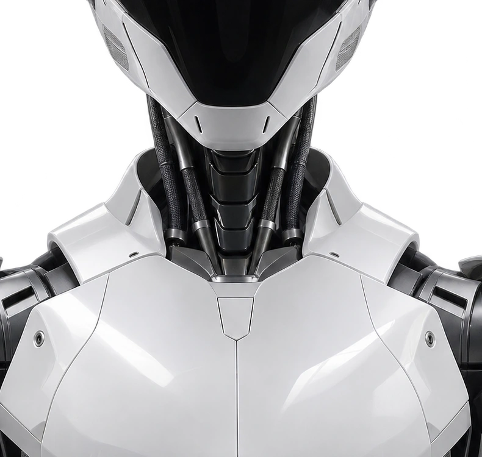

AI Core
Розуміння контексту, прийняття рішень і адаптація до нових задач.
Технології, що поєднують сенсори, штучний інтелект і точну механіку в єдиній системі.
Три ключові напрями формують основу системи SYNAPSE. Оберіть технологію, щоб дізнатися про її роль.

Розуміння контексту, прийняття рішень і адаптація до нових задач.
Сприйняття об’єктів і відстаней для коректної взаємодії зі світом.
Точна синхронізація приводів, балансу та траєкторій руху.

Досліджуємо взаємодію людей і машин, нові матеріали та системи адаптивного керування.
Є питання, ідея співпраці чи сценарій застосування роботів? Розпочніть діалог із нашою командою.